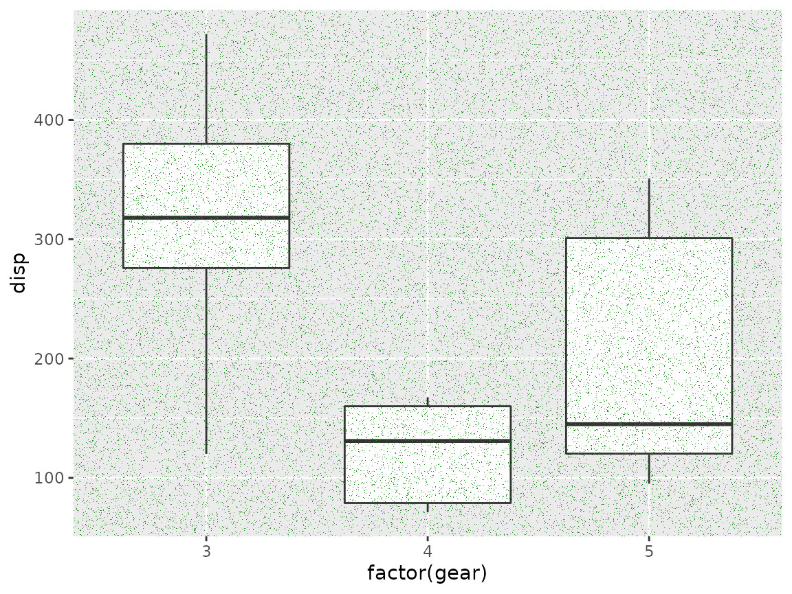
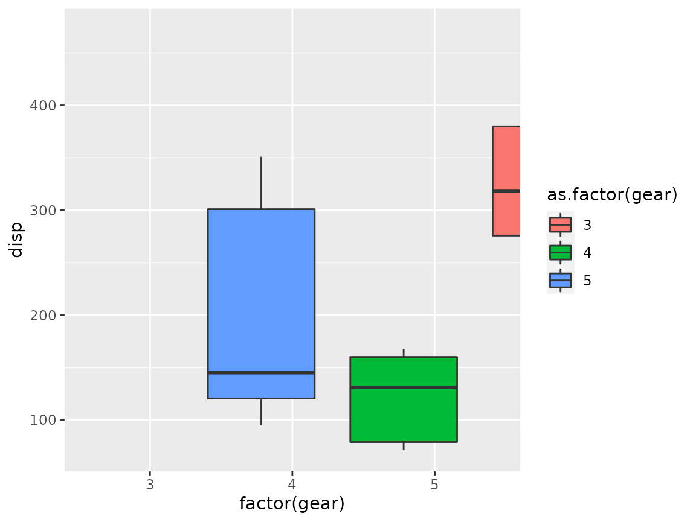

While ggfx comes with a range of powerful and classic filters, one of the most powerful one is with_custom() as it allows you to implement your own filters while still taking advantage of the infrastructure of ggfx. There are still complications that needs to be understood, so this vignette will try to walk you through the process of designing custom filters.
The input
with_custom() takes a filter function which defines the working of the filter. This function will get a nativeRaster object encoding the rasterized layer to filter on as the first argument along with any additional argument that has been passed to with_filter(). The nativeRaster object is a very efficient representation of raster image data, but unfortunately very hard to work with as it has only been designed for passing around, not for manipulation.
nativeRaster objects
At its core, the nativeRaster class is a direct access to how image data is stored and handled internally by the graphics engine. It is an integer vector with each element encoding a pixel colour. The colour is encoded by splitting the 32 bit in the integer between 8 bit to each of red, green, blue, and alpha. The integer values are more or less unintelligible and while you can convert a nativeRaster object to a raster object, thus getting the hex-string version of the colour, there is no way to convert back again. This functionality has been added to the farver package though:
native_rep <- farver::encode_native('#45fe2a')
native_rep
#> [1] -13959611
farver::decode_native(native_rep)
#> [1] "#45FE2A"nativeRaster objects are not matrices, but do have dimensions giving the height and width in pixels. Unlike matrices in R the cells are encoded in row-major order since that is the convention for image data.
Since this format has never been meant for any use in R, except for passing around, no-one ever bothered to implement indexing that honor the row-major encoding, so the mere act of indexing into a native raster will completely destroy the ordering of pixels. Because of this, ggfx provides a slew of helpers for getting access to this data. For anything but the most trivial filters, it makes sense to use the magick package. magick::image_read() can get a nativeRaster so if you go that route you don’t have to think about any of these complications.
Filter output
The given filter function must return a raster or nativeRaster object of the same dimensions as the input raster object - failing to do so will lead to some very weird results. If you are using magick in your filter, you can get a nativeRaster object from it by calling as.raster(x, native = TRUE)
Drawing area
The raster that you are provided will span the full device area, not just the viewport currently being drawn to. This is because a viewport might not be clipping and so content outside the viewport is still visible and should be filtered. ggfx provides a variety of functions that lets you figure out where the current viewport is located in the given raster. These will be explained throughout the examples.
Our first filter
To show a very simple filter, we will create a very simply filter that takes a user specified color and proportion and turns the given proportion of pixels into that colour at random:
library(ggplot2)
speckle <- function(x, colour, proportion) {
raster_dim <- dim(x)
n_pixels <- prod(raster_dim)
n_speckles <- n_pixels * proportion
x[sample(length(x), n_speckles)] <- farver::encode_native(colour)
x
}
ggplot(mtcars, aes(x = factor(gear), y = disp)) +
with_custom(
geom_boxplot(),
filter = speckle,
colour = 'forestgreen',
proportion = 0.05
)
We, thankfully, see that it does exactly what we set out to do. For this particularly simple example we also see that we don’t really have to care about all the complications in the nativeRaster object since we are simply modifying pixels at random and just index into it as if it were a vector.
Taking control of nativeRaster
To illustrate the complications of working with nativeRaster object we’ll create a simple filter that fills an area with a colour. In the first example we treat the raster as a matrix:
fill_patch_naive <- function(x, colour, x_range, y_range) {
cols <- seq(x_range[1], x_range[2])
rows <- seq(y_range[1], y_range[2])
cat(dim(x))
x[rows, cols] <- farver::encode_native(colour)
x
}
ggplot(mtcars, aes(x = factor(gear), y = disp)) +
with_custom(
geom_boxplot(),
filter = fill_patch_naive,
colour = 'forestgreen',
x_range = c(80, 250),
y_range = c(50, 100)
)
#> 865 1152Ugh! We obviously have an indexing problem. As we discussed above this is because rasters in R are in row-major order, while their indexing functions assume column-major order. The R documentation propose that you convert the data to a regular matrix and then do your manipulations, but you usually want to ensure a good performance with filters as they are run at every draw operation, not just once. ggfx provide some setter and getter functions for rasters though so we can rewrite the above:
fill_patch <- function(x, colour, x_range, y_range) {
patch <- get_raster_area(
raster = x,
xmin = x_range[1],
ymin = y_range[1],
xmax = x_range[2],
ymax = y_range[2]
)
patch[] <- farver::encode_native(colour)
set_raster_area(
raster = x,
value = patch,
xmin = x_range[1],
ymin = y_range[1]
)
}
ggplot(mtcars, aes(x = factor(gear), y = disp)) +
with_custom(
geom_boxplot(),
filter = fill_patch,
colour = 'forestgreen',
x_range = c(80, 250),
y_range = c(50, 100)
)
Detour: Escaping pixel values
In our filter above we are giving the x-, and y-range in pixels. In the filters built into ggfx you can use either pixel values or a unit object, which also makes sense to do here as the placement of the patch would otherwise be dependent on the exact rendering size of the plot. To make your filter work with unit specifications you simple convert the input with to_pixels():
fill_patch <- function(x, colour, x_range, y_range) {
x_range <- to_pixels(x_range, location = TRUE)
y_range <- sort(to_pixels(y_range, y_axis = TRUE, location = TRUE))
patch <- get_raster_area(
raster = x,
xmin = x_range[1],
ymin = y_range[1],
xmax = x_range[2],
ymax = y_range[2]
)
patch[] <- farver::encode_native(colour)
set_raster_area(
raster = x,
value = patch,
xmin = x_range[1],
ymin = y_range[1]
)
}
ggplot(mtcars, aes(x = factor(gear), y = disp)) +
with_custom(
geom_boxplot(),
filter = fill_patch,
colour = 'forestgreen',
x_range = unit(c(0.3, 0.7), 'npc'),
y_range = unit(c(0.4, 0.6), 'npc')
)
We now have a filter function were you can use non-pixel units for specifying the patch location. If you look at the changes you see that we sort the y_range parameter after we convert it to pixels - why is that? This is because grid uses a coordinate system that starts at the bottom left corner and moves up and to the right, whereas matrix indexing is based on the top-left corner moving down and to the right instead. This means that our y_range becomes flipped when we convert it to pixel locations and the lowest values is suddenly the highest.
Finding the viewport
While some filters don’t really care about what part of the given raster is in the current viewport, others might do: Consider this simple flip filter (were we also use index_raster() as a direct replacement for [,] indexing):
flip_image <- function(x, horizontal = TRUE) {
dims <- dim(x)
rows <- seq_len(dims[1])
cols <- seq_len(dims[2])
if (horizontal) {
cols <- rev(cols)
} else {
rows <- rev(rows)
}
index_raster(x, cols, rows)
}
ggplot(mtcars, aes(x = factor(gear), y = disp)) +
with_custom(
geom_boxplot(aes(fill = as.factor(gear))),
filter = flip_image
)
We can see that the filter is indeed flipping the layer, but it is flipping it around the center of the image, not the center of the panel. In order to make the filter viewport aware we will use some of the provide viewport helpers:
flip_image <- function(x, horizontal = TRUE) {
vp <- get_viewport_area(x)
dims <- dim(vp)
rows <- seq_len(dims[1])
cols <- seq_len(dims[2])
if (horizontal) {
cols <- rev(cols)
} else {
rows <- rev(rows)
}
vp <- index_raster(vp, cols, rows)
set_viewport_area(x, vp)
}
ggplot(mtcars, aes(x = factor(gear), y = disp)) +
with_custom(
geom_boxplot(aes(fill = as.factor(gear))),
filter = flip_image
)Using magick
While some effects are pretty easy to achieve just be manipulating the raster data structure, most filters will require non-trivial modifications to the colours of the pixels. In these situations it is often beneficial to use the magick package to build on top of the vast library of image manipulation functions from the ImageMagick library. To show of this we create a filter that distorts the content towards the center (imploding it)
implode <- function(x, factor = 0.5) {
vp <- magick::image_read(get_viewport_area(x))
vp <- magick::image_implode(vp, factor)
set_viewport_area(x, as.raster(vp, native = TRUE))
}
ggplot(mtcars, aes(x = factor(gear), y = disp)) +
with_custom(
geom_boxplot(aes(fill = as.factor(gear))),
filter = implode
)We see that image_read() works nicely with nativeRaster objects and that we can easily mix use of magick with the raster helpers provided by ggfx.